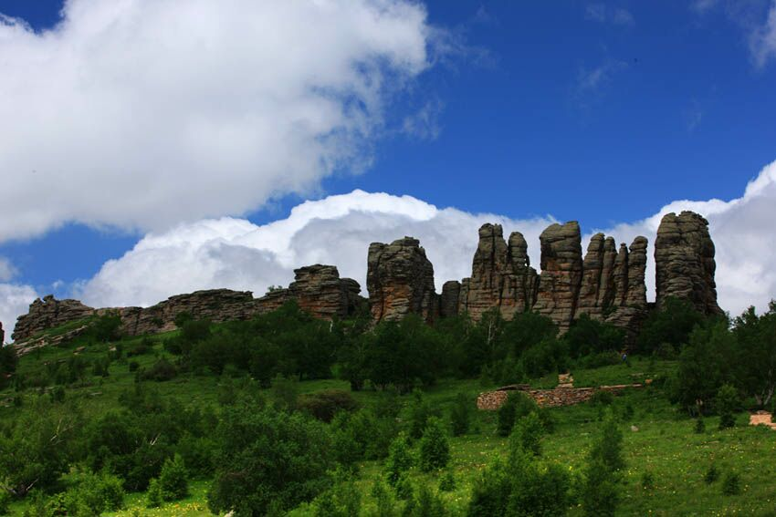
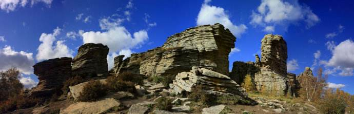

克什克腾石阵（原阿斯哈图石林）位于赤峰市克什克腾旗。阿斯哈图是蒙语，汉译为“险峻的岩石”。它处于大兴安岭余脉向西部草原过渡的地带。草原上群山呈现出典型的丘陵地形地貌特征，四周险峻，而山顶平缓起伏，冰石林在这平坦的丘陵地带显得格外突出。据专家分析，阿斯哈图石林主要是由冰盖冰川的创蚀、掘蚀和冰川 融化时形成的大量冰川融水的冲蚀作用下形成的，所以叫“冰川石林”。共有四大景区，目前一、二、三、四景区正常对外开放。
特点 由于第四纪冰川长期的精雕细刻，造就了阿斯哈图冰石林这一方神秘的独特的自然风貌，具有华山之险峻，黄山之秀丽，泰山之雄奇。这里山连着山，峰连着峰，山山各具特色，山山不同，峰峰各异。阿斯哈图冰石林风光秀丽，景色迷人，是举世罕见的“冰石林”。阿斯哈图石林发育类型很多，形状千姿百态。有的像“石柱”、“石丛”、“石笋”，有的好似“石塔”、“石墙”，还有的像“秀女望月”、“比萨斜塔”。 石林雄姿 阿斯哈图石林形态多变，很少有雷同形状，而且浑厚粗犷，在荒野中突兀而立，十分醒目。当地百姓看得久了，看出名堂，于是石林中便有了成吉思汗拴马柱、神剑石、南天门、神女石、姐妹石等名称。
由于第四纪冰川长期的精雕细刻，造就了阿斯哈图冰石林这一方神秘的独特的自然风貌，具有华山之险峻，黄山之秀丽，泰山之雄奇。这里山连着山，峰连着峰，山山各具特色，山山不同，峰峰各异。阿斯哈图冰石林风光秀丽，景色迷人，是举世罕见的“冰石林”。阿斯哈图石林发育类型很多，形状千姿百态。有的像“石柱”、“石丛”、“石笋”，有的好似“石塔”、“石墙”，还有的像“秀女望月”、“比萨斜塔”。 石林雄姿 阿斯哈图石林形态多变，很少有雷同形状，而且浑厚粗犷，在荒野中突兀而立，十分醒目。当地百姓看得久了，看出名堂，于是石林中便有了成吉思汗拴马柱、神剑石、南天门、神女石、姐妹石等名称。